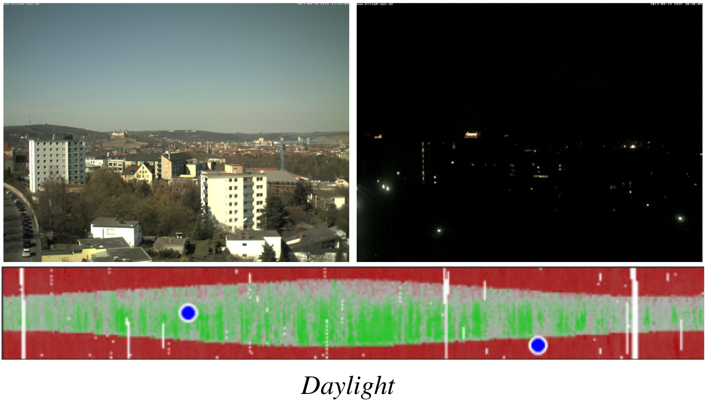

A Fast Method for Estimating Transient Scene Attributes
Abstract:
We propose the use of deep convolutional neural networks to estimate the transient attributes of a scene from a single image. Transient scene attributes describe both the objective conditions, such as the weather, time of day, and the season, and subjective properties of a scene, such as whether or not the scene seems busy. Recently, convolutional neural networks have been used to achieve state-of-the-art results for many vision problems, from object detection to scene classification, but have not previously been used for estimating transient attributes. We compare several methods for adapting an existing network architecture and present state-of-the-art results on two benchmark datasets. Our method is more accurate and significantly faster than previous methods, enabling real-world applications.People:
University of Kentucky
Related Papers
-
A Fast Method for Estimating Transient Scene Attributes
(Ryan Baltenberger, Menghua Zhai, Connor Greenwell, Scott Workman, Nathan Jacobs),
In IEEE Winter Conference on Applications of Computer Vision (WACV), 2016.
Bibtex Entry:
@article{baltenberger16transient, title = {{A Fast Method for Estimating Transient Scene Attributes}}, author = {Baltenberger, Ryan and Zhai, Menghua and Greenwell, Connor and Workman, Scott and Jacobs, Nathan}, journal = {{IEEE Winter Conference on Applications of Computer Vision (WACV)}}, year = {2016}, volume = {2016}, number = {1}, pages = {8} }
Models:
These are the Caffe model files for both TransientNet and CloudyNet. Each zip file contains the network's deploy and solver files used for training and the learned weights.Github Repository
TransientNet Models
CloudyNet Models